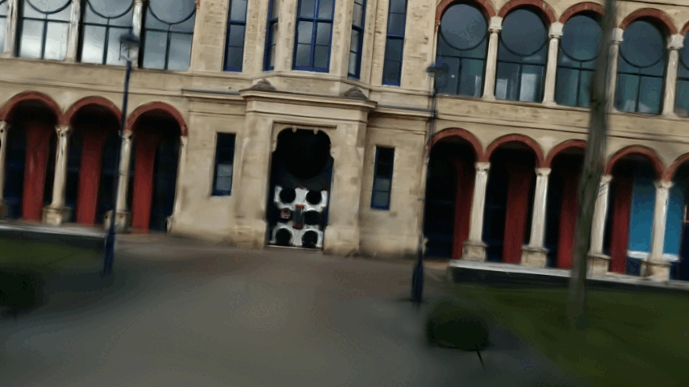
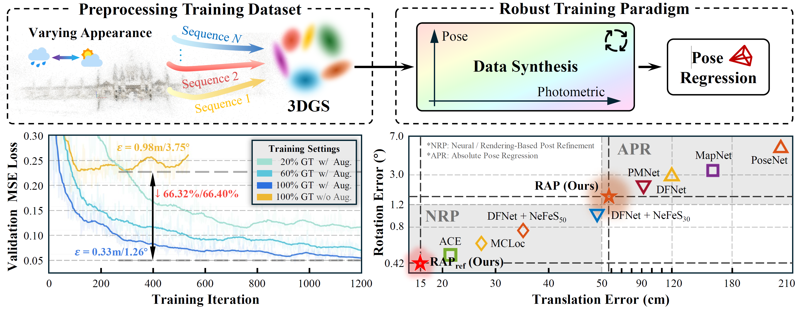
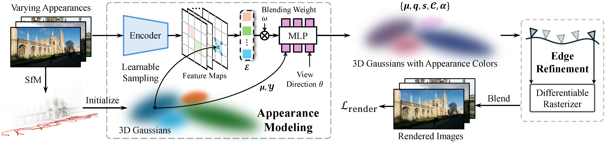

More Visualizations (Under Construction)





Visual localization, which estimates a camera's pose within a known scene, is a long-standing challenge in vision and robotics. Recent end-to-end methods that directly regress camera poses from query images have gained attention for fast inference. However, existing methods often struggle to generalize to unseen views. In this work, we aim to unleash the power of data synthesis to promote the generalizability of pose regression. Specifically, we lift real 2D images into 3D Gaussian Splats with varying appearance and deblurring abilities, which are then used as a data engine to synthesize more posed images. To fully leverage the synthetic data, we build a two-branch joint training pipeline, with an adversarial discriminator to bridge the syn-to-real gap. Experiments on established benchmarks show that our method outperforms state-of-the-art end-to-end approaches, reducing translation and rotation errors by 50% and 21.6% on indoor datasets, and 35.56% and 38.7% on outdoor datasets. We also validate the effectiveness of our method in dynamic driving scenarios under varying weather conditions. Notably, as data synthesis scales up, our method exhibits a growing ability to interpolate and extrapolate training data for localizing unseen views.


Overall illustration of appearance-varying 3DGS. The framework models varying appearances using 3D Gaussians enhanced with appearance colors. It initializes 3D Gaussians from SfM data, refines their appearance by learnable sampling and blending weights computed via an encoder and MLP, and renders images by a differentiable rasterizer with edge refinement to minimize the rendering loss.
